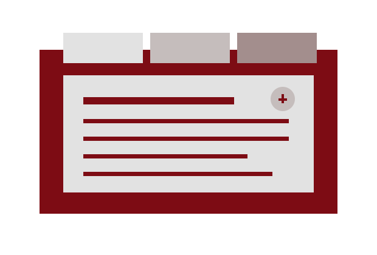
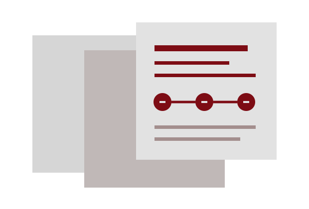
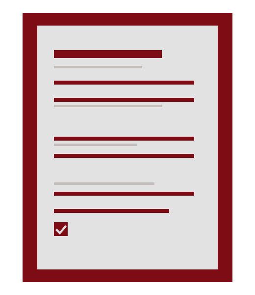

Sözleşmeler
Örnek çalışma alanı. Kapsam ve hizmet tanımı büro tarafından doğrulanmalıdır.
Konunuzu kısaca paylaşın. Görüşme talebiniz için izlenecek yol ve gerekli bilgiler birlikte netleşsin.
İlk görüşme talebiHukuk bürosu için hazırlanmış örnek web teması
Bu bölümde büronun gerçek hizmet başlıkları yer alır. Aşağıdaki gruplar yalnızca yerleşimi göstermek için yazılmış örneklerdir.

Örnek çalışma alanı. Kapsam ve hizmet tanımı büro tarafından doğrulanmalıdır.
Örnek çalışma alanı. Görüşme öncesi gerekli bilgiler, başvuru konusuna göre belirlenir.
Örnek çalışma alanı. Her başvurunun kapsamı ve izlenecek yol ayrıca değerlendirilir.
İlk temas, konuyu ve beklentiyi anlamaya yarayan kısa bir bilgi alışverişidir.
Talep formunda çalışma alanını ve kısa konu başlığını seçin.
Size nasıl ve hangi iletişim bilgisiyle dönülebileceğini ekleyin.
Büro, talebinizi inceledikten sonra görüşme için uygun adımları paylaşır.
Akış örnektir; büro tarafından kendi çalışma düzenine göre uyarlanmalıdır.

Bilgiler bu sayfada işlenir ve saklanmaz. Gönderim yapılmaz; form, sizin gözden geçirip paylaşabileceğiniz bir talep metni oluşturur.

Metni seçip kopyalayın ve büronun doğrulanmış iletişim kanalından paylaşın.